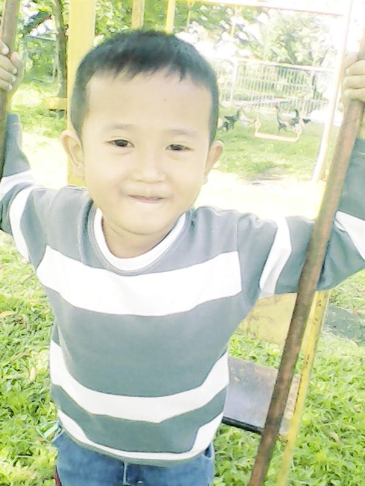
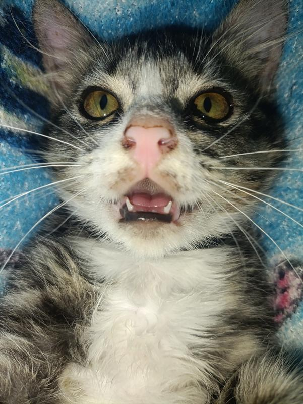
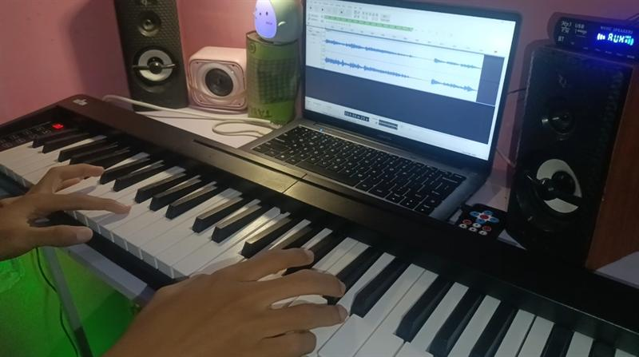
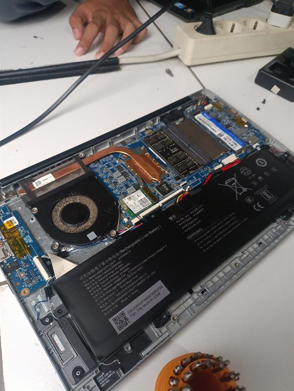
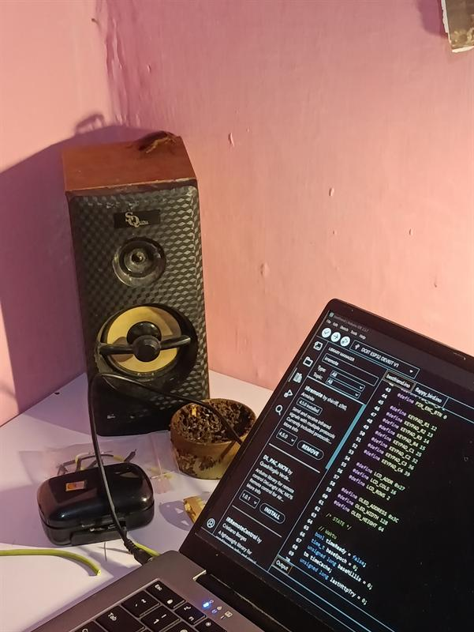
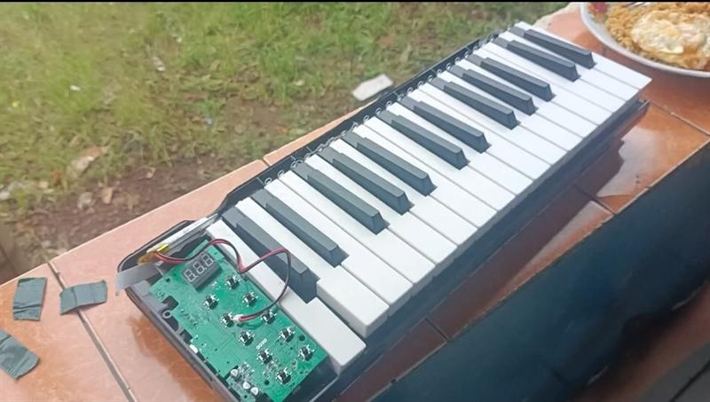
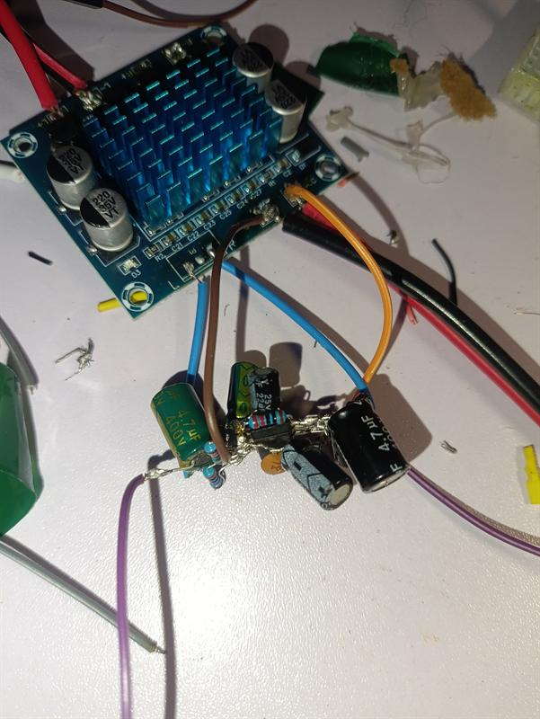
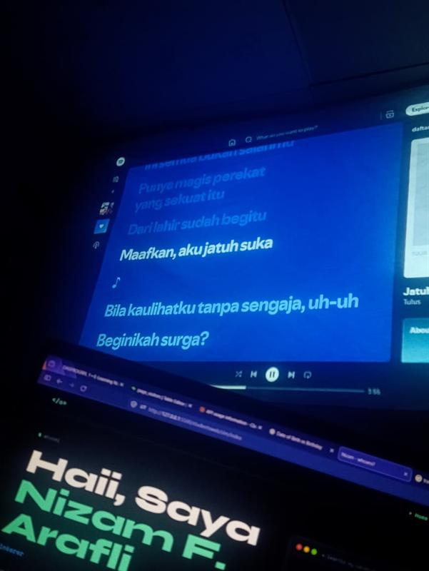
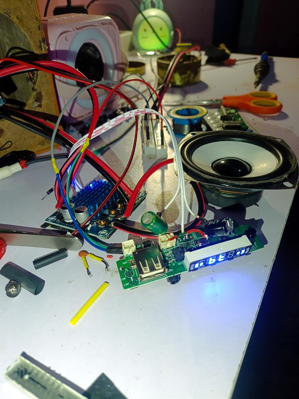

Santai, to the point, dan suka membongkar hal rumit sampai paham cara kerjanya. Dari ngeracik Cloudflare Workers & Supabase, benerin jalur sirkuit hardware & laptop, membangun web resmi OSIS & sistem belajar sekolah, sampai mainin tuts piano di sela waktu luang.

Berdasarkan jejak baris kode, komit git malam hari, dan deretan sistem yang dibangun di folder ini, berikut potret otentik kepribadian dan cara pandang seorang Nizam:
Bukan tipe yang cuma puas bikin kalkulator atau todo-list tutorial. Kamu membangun ekosistem fungsional yang benar-benar dipakai orang lain: mulai dari OSIS TARPAN ONE untuk sekolah, platform belajar E-Learniz v3, hingga sistem kasir & monitor dapur Teras Mbun.
Rasa ingin tahu yang menembus batas layar kaca. Kamu suka membongkar laptop, flashing smartphone mode EDL, merakit smart room ESP32, hingga menyolder modul power supply dan speaker. Bagimu, memahami perangkat keras adalah seni tersendiri.
Persona yang kamu tulis di bot AI-mu sendiri menggambarkannya secara akurat: "Santai, to the point, kaya temen kelas yang pendiem tapi pinter." Buktinya nyata: kamu memfasilitasi hosting portofolio untuk 30+ teman sekelas di StudentsWeb dan membuat portal kisi-kisi ujian untuk membantu mereka.
Nekat membeli piano 1 jutaan secara mandiri, lalu berlatih disiplin setiap hari sampai tangan kiri dan kanan tersinkronisasi serta menghafal beragam progresi chord. Koding adalah melatih logika algoritma; musik adalah mengasah kepekaan rasa. Kamu memiliki keseimbangan langka antara keduanya.
Klik langsung pada kartu project mana pun untuk membukanya secara instan, atau klik Detail Arsitektur untuk melihat penjelasan teknologinya:
Portal belajar modern berbasis edge network. Diperkuat Cloudflare Workers dan database SQLite/D1, dilengkapi pengalih kelas dinamis, materi, kuis, dan akun tamu read-only.
Web portal resmi OSIS SMK Taruna Harapan 1 Cipatat. Menghadirkan swipe drawer, bottom sheet modal, seksi bidang, prestasi, dan kotak aspirasi online siswa.
Sistem pesan makan tanpa ribet untuk kedai makan "Teras Mbun". Dilengkapi pemesanan mandiri oleh tamu, live monitor antrean pesanan di dapur, dan dasbor admin kasir.
Bot WhatsApp cerdas multi-device dengan Baileys. Mengintegrasikan asisten AI personal '@nizamai', pengingat jadwal kelas, pembuat stiker Brat, dan sinkronisasi Supabase.
Platform latihan soal ulangan dan rekapitulasi nilai instan. Siswa tinggal memilih kelas dan nama tanpa perlu login rumit; nilai otomatis tersimpan ke Supabase cloud.
Inisiatif hosting dan pembuatan web portofolio bagi 30+ teman sekelas di jurusan RPL. Dilengkapi floating navigation 'Magic Pill' untuk menjelajah profil teman satu angkatan.
Rekayasa ulang antarmuka WhatsApp Web secara pixel-perfect murni dengan Vanilla JavaScript. Menangani state obrolan, chat renderer, filter kontak, dan tema gelap presisi.
Papan skor digital interaktif kontras tinggi untuk pertandingan class-meeting sekolah dengan kontrol sentuh responsif dan pembaruan babak dinamis.
Ketik perintah langsung di terminal ini untuk menelusuri data sistem, catatan oprek, atau rahasia komit git:
Kombinasi antara keahlian rekayasa perangkat lunak modern, penguasaan perangkat keras elektro, dan kepekaan musikal piano otodidak:
Diciptakan menggunakan Web Audio API bawaan browser tanpa file audio luar. Klik tuts di sebelah kanan untuk mendengarkan nada harmonik piano elektrik!
Potongan dokumentasi asli dari balik meja kerja, tuts piano, dan eksperimen perangkat keras (sudah dioptimasi ringan):








Punya ide project web, butuh bantuan sistem koding, ingin konsultasi hardware, atau sekadar ingin saling sapa:
Klik salah satu untuk langsung menghubungi atau menyalin kontak:
Pesan ini akan langsung diteruskan ke WhatsApp pribadi Nizam: